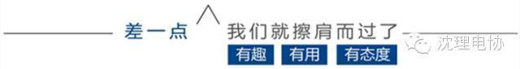
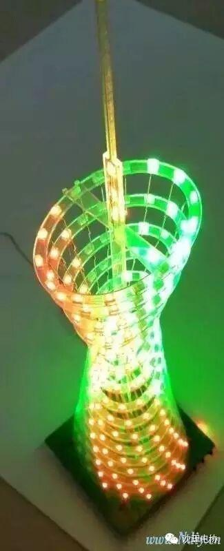

今日头条

今日头条
LED大赛在五月中旬会如期举行哦！各位小伙伴们准备好没有？ 如果准备好，请关注微信平台的比赛信息获取第一手比赛动态。如果没有准备好，更要关注微信平台，获取制作LED的新鲜知识干货。

小提示：
在微信公众平台对话框里输入活动、内容名称可轻松获取相关照片哦。如：理工杯，常规活动，成果展示，干事照片，换届选举等等。
如果你也想在沈理电协微信平台照片中看到你或者想要上传相关照片，可联系企鹅号：798099661。随时上传。


编/高天